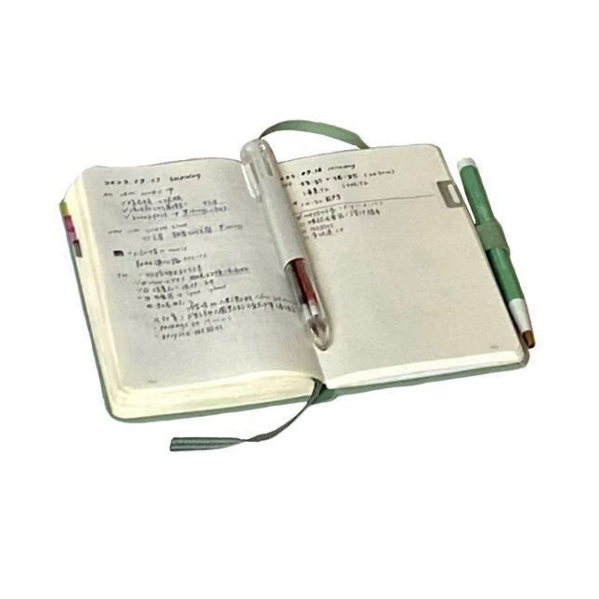

Embodied
Pilates &
Movement

Community
Saturday
Reading Group

Personal
About
Bella
Beyond Research
The body knows what the mind is still learning.
"Small shifts redirect self-defeating patterns into self-enhancing ones."
"Design environments where healthy behaviors happen naturally."
"The body is not separate from the research. It's the first data point."
Embodied
Pilates &
Movement
Community
Saturday
Reading Group
Personal
About
Bella
Embodied Practice · Certified Instructor
I'm a certified Pilates instructor. This isn't separate from my research — it is part of it.
Understanding how the body processes stress, builds proprioceptive awareness, and adapts through iterative practice informs everything I study about health communication.
What Pilates teaches me about research:
Community · Mind-Body · Weekly
Every Saturday, a small group gathers to read and discuss books at the intersection of body, mind, and behavior change.
Currently reading:
Previously explored: